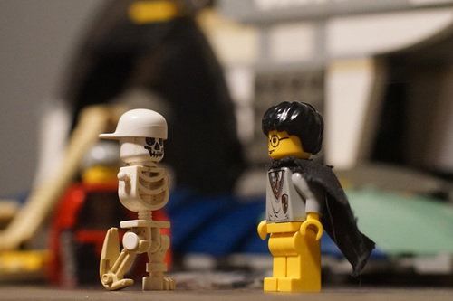
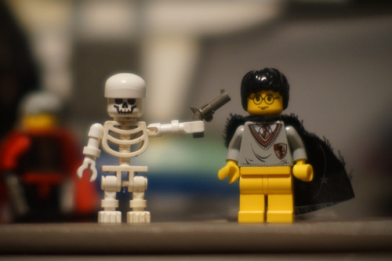
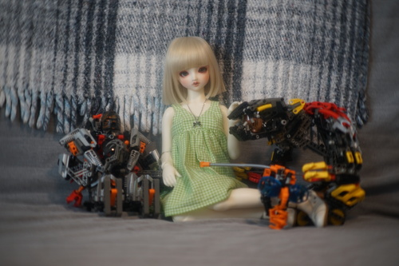
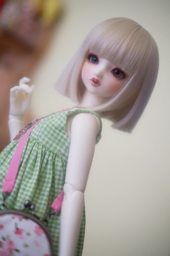
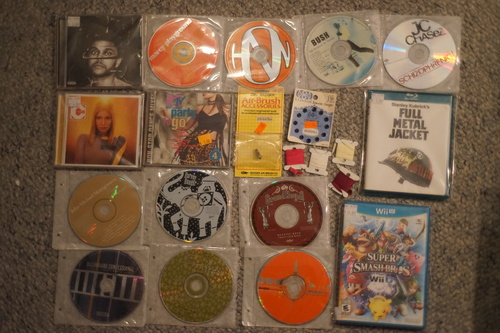

This one got a little long didn't it?? I suppose I should start updating more than twice a month again!
It is very unfortunate, but hors must be shamed.
On the year of our lord Sunday, August 18th, hors messaged me asking if she should preorder QLYwork Minie. I was unable to respond immediately.
By the time I responded, Minie was preordered! Even worse, Mima was not asked! Mima did not give permission!!!
It is terrible we have to do this but, shame on you, hors. smh....

Lots of travel in August means lots of BIG GRAIN!!!!!

THREE big grains!! Incredible! The little black dots are birds stealing a snack from your future loaf of bread.
These are my usual 2 big grain piles. Looking good after harvest!
I recently discovered LEGO! I've never heard of LEGO before, but I really like them, so I've decided to get into lego photography~
 This is Hina's new boyfriend. He listens to nu-metal.

She also made some new friends!

I spent an entire week trying to figure out why my new sewing machine had the absolute worst tension issues I've ever seen. The stitches were absolutely trash! After a few sleepless nights and hours of switching and swapping things out, I finally figured out the bobbin wasn't being loaded correctly. I seriously tried everything I could think of before that! I'm so relieved.
I love to collect bobbins and need at least 10 to not have a meltdown, but my Bernina dealer did not have any bobbins for my machine or even know which bobbins go to this machine. Bernina is not very kind and does not disclose anywhere I can see which bobbins work for their Bernette line. It appears that most, if not all, machines in the Bernette line use the same bobbin that is not the Bernina bobbin. Using eyeball and ruler measurements, I decided the closest bobbins were either class 15 or class 15J.
I stumbled into my local Hobby Lobby to pick up a new hobby and instead bought a pack of class 15 bobbins. They were very close in size, but the machine HATES them. The machine appears to run the bobbin thread over the top of the bobbin and there is a ledge on class 15 that it may be getting caught on.
So I stumbled into my local Joann's and picked up a pack of 15J bobbins. Joanns has the worst prices ever, so always use your coupon if you buy anything. Class 15J do not have the ledge and are even closer in height to the included Bernette bobbins. I have not had any issues with these bobbins yet. I'll keep testing this 3 pack and then start buying a ton if they work.
My small desk has become my computer desk, drawing desk, and sewing machine desk. It's rather inconvenient so I'm organizing my room AGAIN.I gotta make some room to do something or I'll go nuts!
I found a sakura chirimen coinpurse for maybe a dollar not too long ago and bought it with the intention of making a purse for Hina.
I modified the bottom to be flat instead of round and added 2 hooks for attaching the straps. I made a handbag strap and a longer cross body strap.

I found a pack of Madoka keychains in my room. Half of them were used in a floating water figure experiment (RIP Coobie), but most of them are mostly undamaged. Our gal Hina would relate most to worst girl, so I hooked worst girl on her bag for her. A kpop item would be better but I can't recall where her GOT7 merch is. Hina isn't an otaku.

I suppose it's time to round up all the CDs we bought since my last haul post. ;-;
Omg these song titles are nasty
ouchie price. Very spicy lyrics that I would not show my mother.I wish it wasn't in English and I would like it a lot more.
I don't like most of the songs. Not a big hip hop fan
I couldn't just leave it! I'll sneak it into Ryan's CD case.
And many more that didn't get a photo. I did my best to remember the prices, but I didn't write them down at the time. You'll have to guess which ones are Ryan's buys.
FINALLY.
Smacked this one right off my wishlist too
Comes with a PS2 demo disc!
Better than Underoath, but this is no Decemberunderground find. I don't think I'll bother to give it a second listen.
I weighed my options between owning a live album and not owning a Depeche Mode album.
Don't tell Ryan I like Rob Thomas over Matchbox 20.
Go listen to Automatic RIGHT NOW!!!!
This is about as authentic as it gets, my dudes.
Trash.